Правила и безопасность
Законы о рыбной ловле на территории Российской Федерации
Для многих рыбалка – это увлечение, отдых, но даже в этом хобби есть свои законы, за несоблюдение которых следует как административная, так и уголовная ответственность.
Закон о нерестовом запрете
Нерестовый запрет — это период, когда ловля рыбы ограничена или полностью запрещена для защиты размножения водных биоресурсов. Этот период обычно длится с апреля по июнь, но длительность может разниться в зависимости от региона.
Нарушение нерестового запрета в России карается административными штрафами (2–5 тыс. руб. для граждан с конфискацией орудий лова), а при использовании запрещенных средств (сети, электроудочки) или причинении крупного ущерба — уголовной ответственностью по ст. 256 УК РФ (штраф до 500 тыс. руб. или до 2 лет лишения свободы). Дополнительно взимается компенсация за ущерб, который в нерест начисляется в двойном или тройном размере за каждую рыбу.
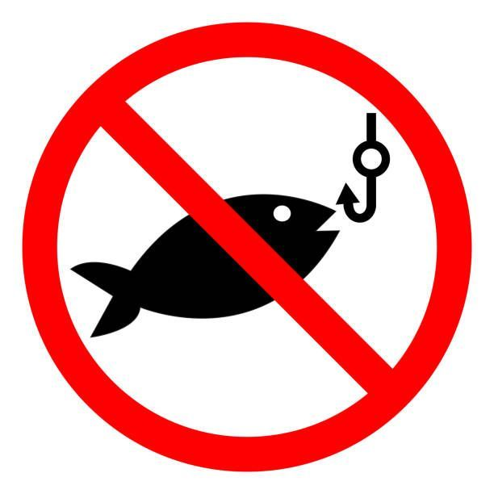
Почему устанавливается нерестовый запрет
Нерест — это период, когда рыба откладывает икру, и ей необходим покой. Нерестовый запрет вводится для обеспечения успешного размножения рыбы, сохранения её популяции и поддержания видового разнообразия в водоемах. В этот период рыба собирается в стаи, становится уязвимой и менее осторожной, поэтому запрет защищает её от массового вылова, предотвращая подрыв воспроизводства.
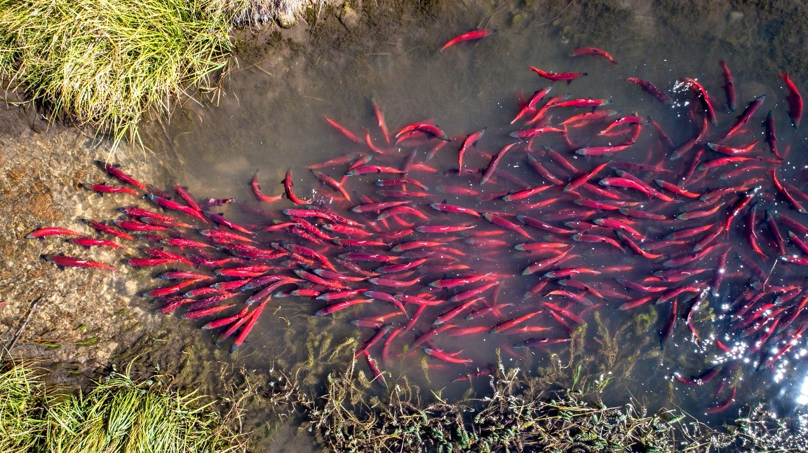
Параметры ловли в период нерестового запрета
Во время нереста в России ловля рыбы разрешена только с берега вне нерестилищ. Основные правила: использование одной поплавочной или донной удочки (фидер) с общим количеством крючков не более 2-х штук на рыболова. Ловля с лодок, использование сетей и спиннинга (в большинстве регионов) запрещены.
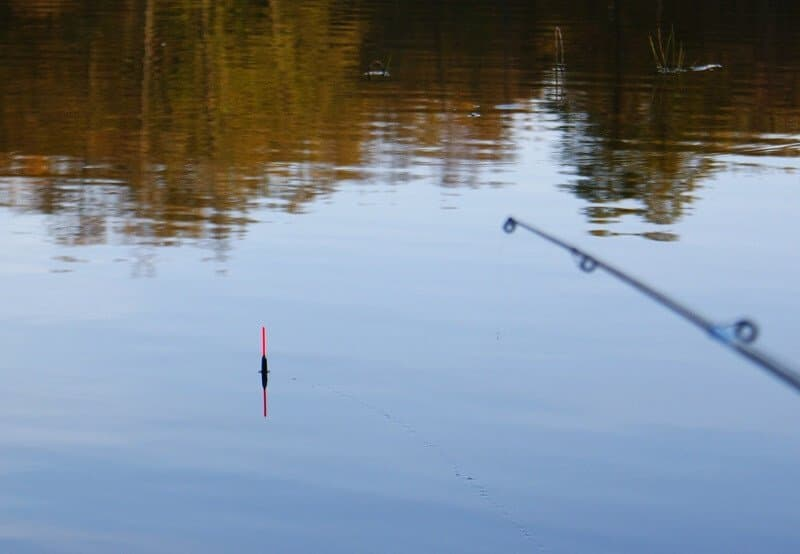
Норма вылова и размеры улова
Норма вылова
В России суточная норма вылова рыбы для личного пользования чаще всего составляет 5 кг на человека. При этом разрешено забрать один экземпляр, если его вес превышает 5 кг. В ряде регионов, таких как Астраханская область, норма может достигать 10 кг. Важно изучать правила для конкретного рыбохозяйственного бассейна, так как они различаются. Во время нереста норма вылова ограничивается до 2 кг, либо любительский лов находиться под запретом в этот период.
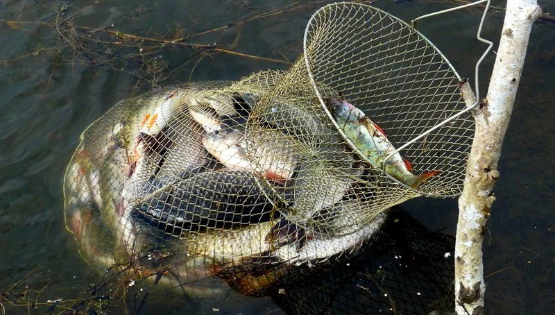
Размеры рыб для поимки
В России установлены минимальные размеры рыбы для вылова (измеряются от вершины рыла до основания хвостового плавника) для сохранения популяции. Основные ограничения: судак — 38-40 см, щука — 32-37 см, лещ — 25-28 см, сом — 60-90 см, сазан — 40 см, жерех — 37-40 см. Мелкую рыбу необходимо отпускать.
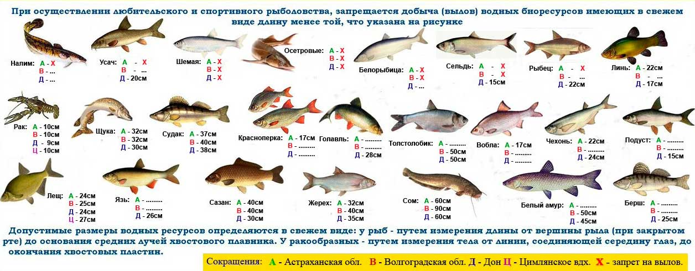
Запрещённые места для рыбалки
В России запрещено рыбачить в нерестовых местах (во время нереста), на зимовальных ямах (зимой), у гидротехнических сооружений (мосты, плотины, шлюзы — ближе 500 м), на частных рыбоводных хозяйствах и в заповедниках, вблизи линий электропередач.
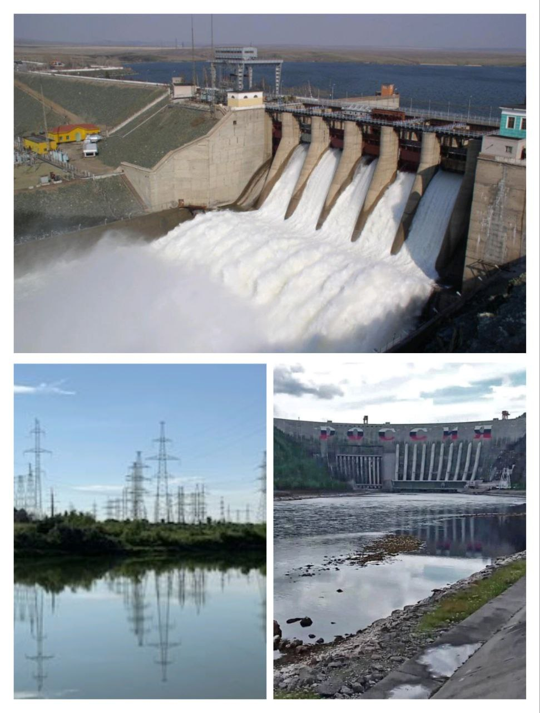
Виды рыб, запрещенные для вылова
В России запрещен вылов видов, занесенных в Красную книгу РФ (осетровые, лососевые, некоторые морские виды), а также определенных видов в зависимости от региона, сезона и размера (молодь). Под запретом находятся белуга, калуга, осетры (русский, сибирский, амурский), атлантический лосось (сёмга) в ряде рек, шемая, вырезуб, таймень, нельма, хариус и самки рака с икрой.
Наказание за нарушение запрета— штрафы от 2000 до 500 000 рублей, конфискация орудий лова/лодок, либо уголовная ответственность (до 5 лет лишения свободы).
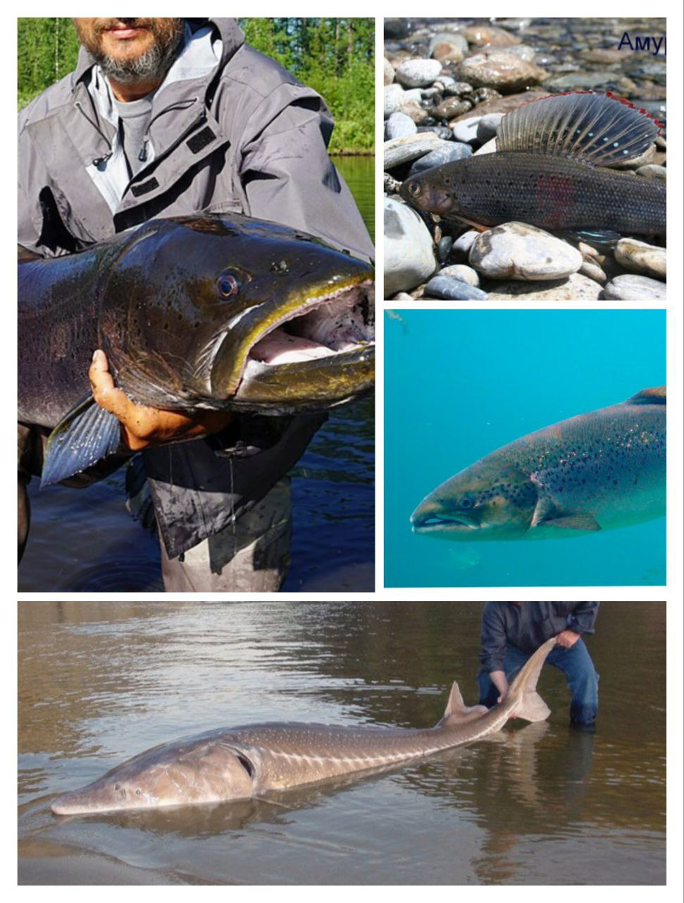
Запрещённые снасти
В России запрещены варварские способы ловли (сети, электроудочки, взрывчатка, химикаты, «глушение»), использование сетей (кроме некоторых регионов Сибири/Севера), багрение, использование огнестрельного/пневматического оружия, ловля на зимовальных ямах и во время нереста (с лодок и более 2 крючков). Штрафы за несоблюдение могут быть административными или уголовными.
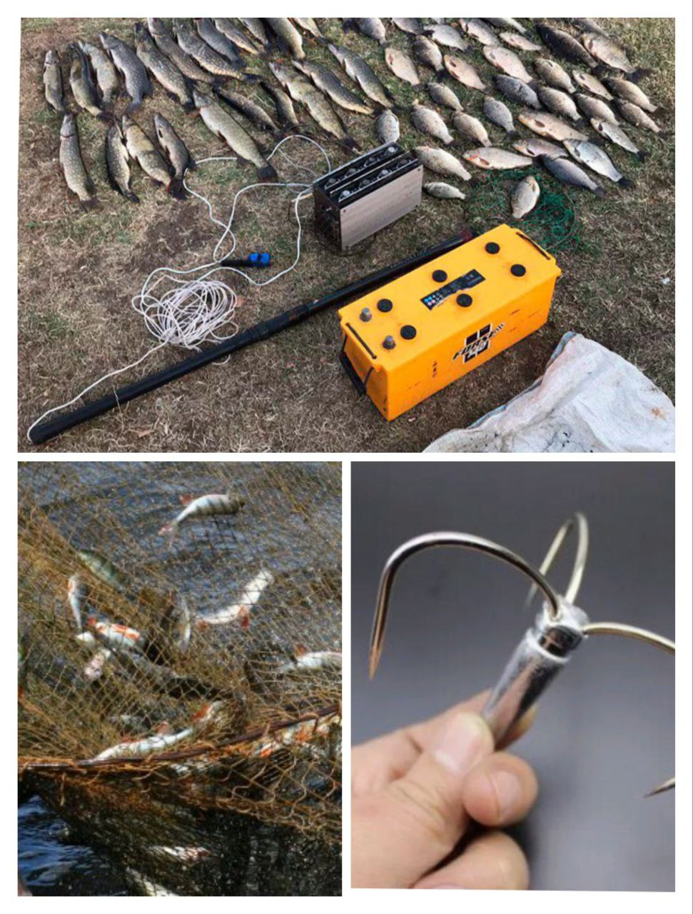
Правила и безопасность на рыбалке
- Экстракторы (вилочки для мелких/средних крючков)
- Зевники (для удержания пасти хищника открытой)
- Рыболовные плоскогубцы/щипцы
Экипировка для рыбалки
На рыбалке очень важно иметь при себе все необходимое, ведь как правило, рыбачат в безлюдных, отдалённых от города местах, в которых будет сложно быстро найти нужную вещь.
Одежда рыболова
Одежда рыбака зависит от того – как и где он собирается рыбачить. Если рыбалка происходит летом, в теплую погоду, на озере, где можно поставить кресло и позакидывать поплавок, то и футболки с шортами и кроссовками будет достаточно, но если вы идете рыбачить на спиннинг, будете ходить по реке, пробираться через заросли и заходить в воду, то ваша экипировка должна быть намного серьезнее.
На экстремальную рыбалку лучше надевать рыболовный костюм, обычно это не очень толстая куртка из плотной ткани и брюки из непромокаемого материала, а также высокие резиновые сапоги. Зимой на рыбалку нужно одеваться максимально тепло, ватные штаны, теплая куртка и валенки идеально подойдут для мороза.
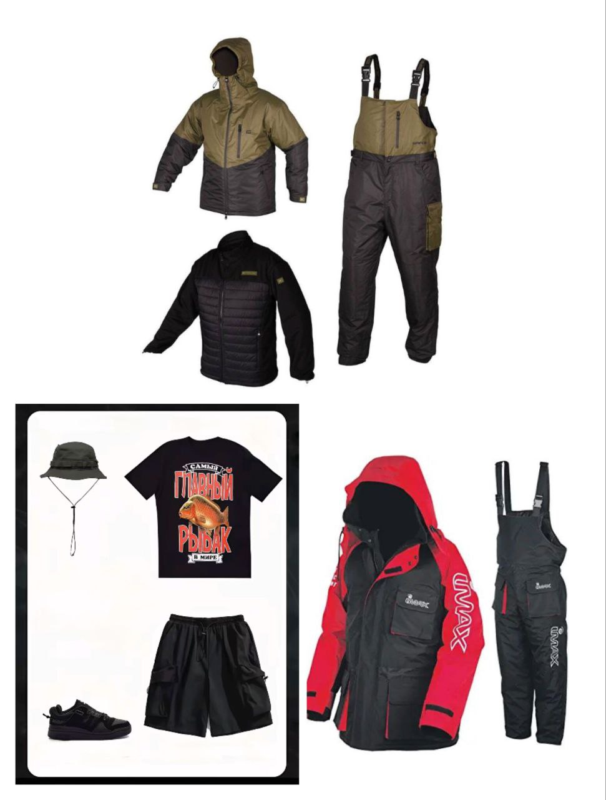
Принадлежности для рыбы
Иногда происходит, что окунь или щука могут очень крепко вцепиться в приманку, да так, что руками и не достать, для таких случаев есть специальные приспособления:
Также, если вы боитесь пораниться во время доставания рыбы, вы можете приобрести рыболовную перчатку, которая сделана из очень плотного материала и может защитить вас от пореза.
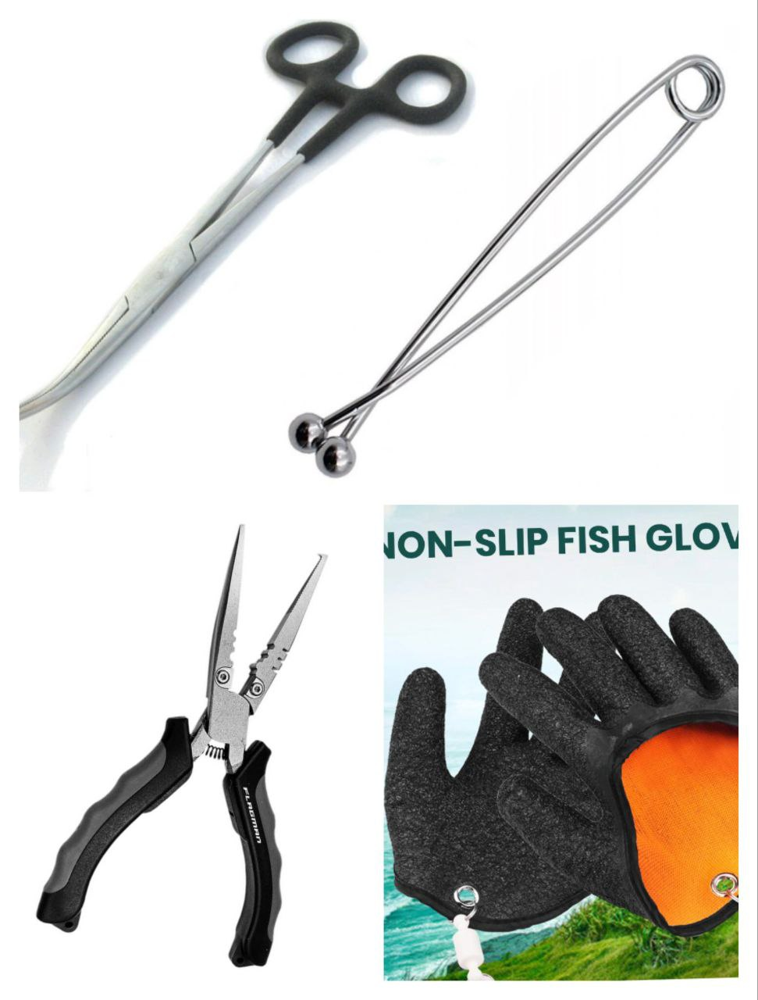
Оснастка и аптечка
Не редко случается, что на рыбалке теряется леска, крючок, обрывается приманка, поэтому каждый рыболов должен иметь при себе кейс, в котором будет все, что поможет ему продолжить рыбалку.
В рыболовном кейсе должны быть: запасные крючки (от 10 штук), запасная леска/плетенка, грузы разных масс для фидера/спиннинга/поплавка, большое количество разных приманок (при ловле на спиннинг), запасные поводки (фидерные или спиннинговые), ножницы для лески, запасные вертлюги, карабины, запасная катушка (если есть).
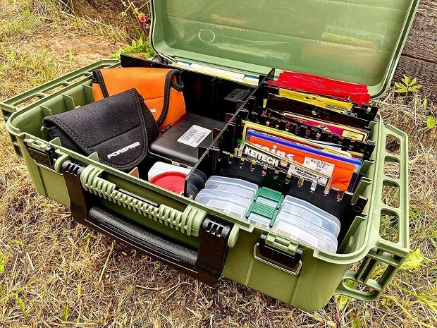
На рыбалке часто происходят порезы, появляются раны, поэтому вы всегда должны быть готовы их обработать. В аптечке на рыбалку стоит брать: влажные салфетки/антисептик, пластырь, зеленку, клей БФ-6. Все это может помочь от небольших ранок, но при сильном порезе или ушибе лучше закончить рыбалку и направиться в больницу.
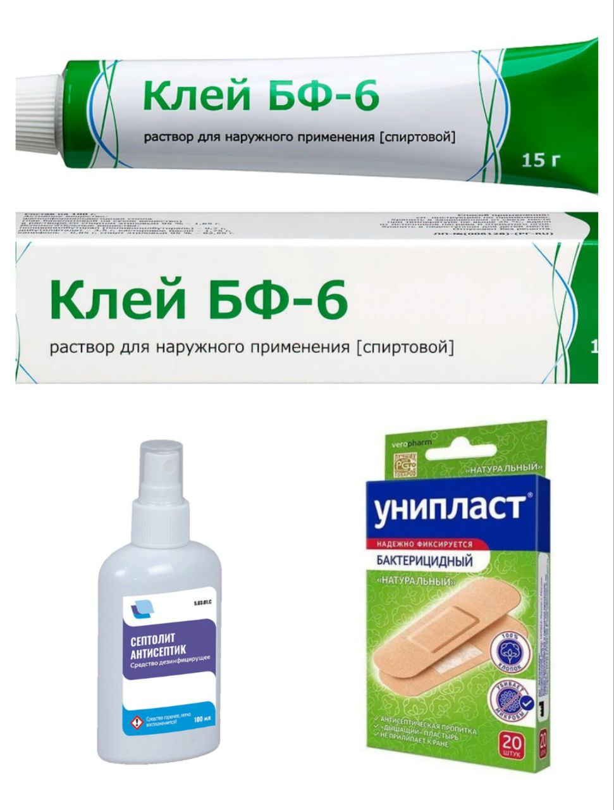
Рыболовные места
Выбор места – это один из важнейших аспектов рыбной ловли, который определяет успех всей рыбалки. Но место должно быть не только рыбным, но и безопасным.
Если вы рыбачите с берега, то остерегайтесь мест с узким берегом, обрывов. Также не следует рыбачить в городских реках, рыбы там может и не быть, но могут быть уличные хулиганы, которые способны причинить вам вред или украсть ваши вещи.
Не в коем случае не рыбачьте на местах, где рыбная ловля запрещена, не рыбачьте вблизи проводов, электростанций, мест выброса отходов.
Если вы ловите на природе (в лесу, далеко от города), то остерегайтесь диких животных, которые могут прийти к реке.
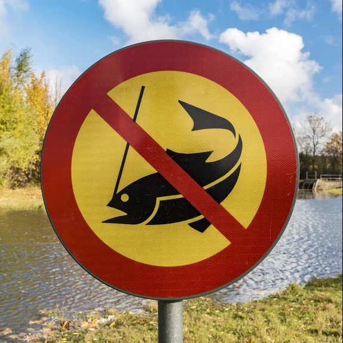
Погода на рыбалке
Старайтесь рыбачить в хорошую погоду, не рыбачьте в дождь, а особенно в грозу, также не рекомендую рыбачить на льду в плюсовую температуру.
Для рыбалки выбирайте не дождливые, не жаркие дни, когда атмосферное давление приходит в норму, в такие дни обычно бывает самая успешная рыбалка.
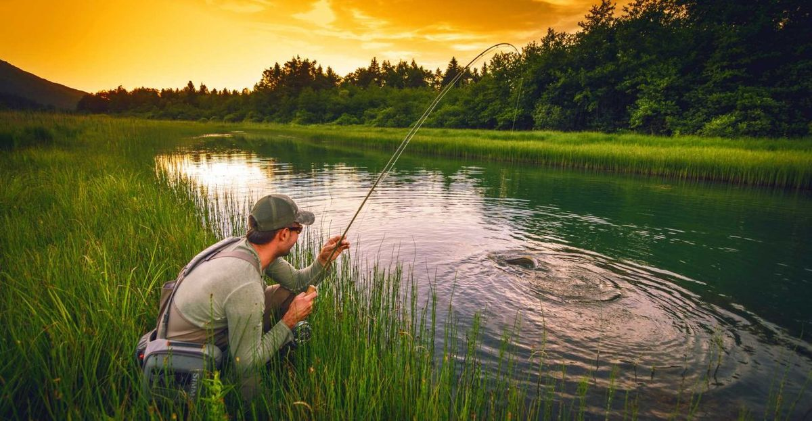